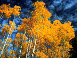
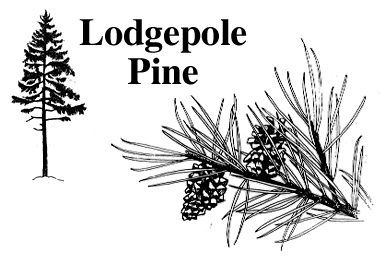

Quiz Format Ecosystems Quiz Stewardship Quiz Industry Quiz
Living Tree Quiz

Directions: Read the statement and choose the most appropriate response. You may click the helpful hints button at any time. Good luck!
1. Trees are known as *** .
a. the world's most abundant natural resource b. the world's largest non-renewable resource c. one of the largest natural supplier of carbon dioxide to the atmosphere d. the largest land plants
helpful hint
2. Pollination and fertilization occur in the organ of the plant known as the ***.
a. flower b. root c. stem d. leaf
helpful hint 3. The function of the leaf guard cells is to ***.
a. regulate the opening or closing of the stomates b. protect the leaf against water loss c. house the organelles that perform photosynthesis d. store gases for use during photosynthesis
4. Transpiration is the ***.
a. chemical reactions from which a plant derives energy b. transport of minerals within a plant c. absorption of minerals from the soil d. loss of water from a plant to the surrounding atmosphere
5. An example of a biotic stress placed on a forest, which may lead to its decline, is ***.
a. insect infestation b. a lightening strike c. sulphur dioxide emissions d. flood waters
6. The process of the development of a seedling from a seed is known as ***.
a. translocation b. pollination c. fertilization d. germination
7. The Cree word for the tree shown in this diagram is ***.

a. wakinakan b. minahtik c. oskahtik d. iyinahtik
8. Binomial nomenclature is used in the scientific world because ***.
a. scientists required a universal common language for organism identification b. identification of the kingdom domain is easier c. the names refer to the organism's life cycle, making identification easier d. common names tend to remain the same from place to place
9. A tree exhibits the following characteristics:
The tree described is the ***.
a. white poplar b. white spruce c. white birch d. willow
10. Saskatchewan is home to several native trees, of both evergreen and deciduous types. All of the following except the *** are deciduous trees.
a. white spruce b. willow c. tamarack d. trembling aspen